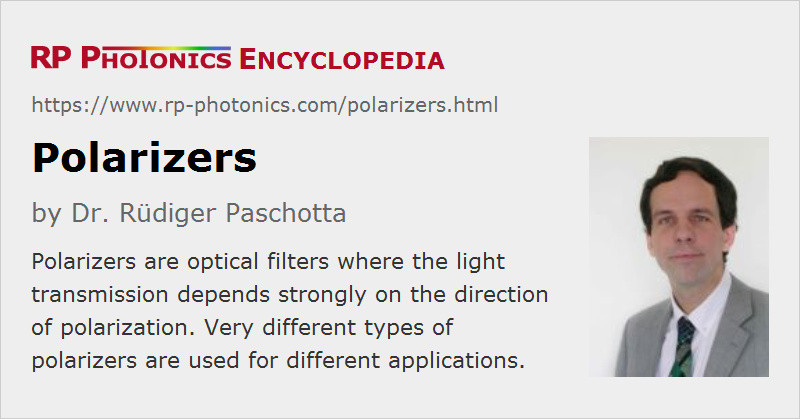

Polarizers
Definition: optical filters where the light transmission depends strongly on the direction of polarization
More specific terms: sheet polarizers, wire grid polarizers, cube polarizers, thin-film polarizers
German: Polarisatoren
How to cite the article; suggest additional literature
Author: Dr. Rüdiger Paschotta
A polarizer is a kind of optical filter where the light transmission depends strongly on the polarization state. Normally, light with linear polarization in a certain direction is passed, and light polarized in an orthogonal direction is either absorbed or sent to a different direction.
Most polarizers act based on linear polarizations. However, one can also construct devices passing light with a certain circular polarization, usually using one or more quarter waveplates or possibly Faraday rotators in conjunction with a linear polarizer.
Note that a polarizer can not convert any polarization of input light into the wanted polarization; this is physically not possible. It can only remove light with the unwanted polarization.
Ideal versus Real Polarizers
An ideal polarizer would have the following properties:
- Light with the “correct” polarization state is passed completely (without any loss of optical power), whereas light with the other polarization direction is blocked completely (perfect extinction).
- The passed light has a degree of polarization of exactly 100%, and its transverse electric field profile is not modified.
- All this would work for arbitrary wavelengths, for a wide range of incidence angles and at arbitrarily high optical power levels.
- There would be no wavefront distortions.
In practice, polarizers are not ideal. In particular, they do not provide perfect extinction. Also, they absorb or reflect some part of the optical power, and the absorbed part may lead to thermal effects such as beam distortions. Even at low power levels, some degree of wavefront distortions occurs. The performance depends very much on the used type of polarizer (see below).
The use of a polarizer can have different purposes:
- In some applications, the essential aspect is to ensure that one output is linearly polarized (with a high degree of polarization), whereas it is not relevant what happens to the input light with the “suppressed” polarization state.
- On other cases, one needs to separate different polarization components in order to use both. Often, a high degree of polarization of both is desirable.
- Polarizers are also used for combining two polarized beams into one output beam, which may be polarized or unpolarized. (See the article on polarization beam combining.)
Types of Optical Polarizers
Absorptive Polarizers (= Dichroic Polarizers)
For low-power applications, Polaroid filters (polarizing sheets, sheet polarizers) are often used. These are also called dichroic. They consist of a special doped plastic sheet (a polymer materials), which has been stretched in one direction, such that the polymer chains are more or less aligned along one axis. Light a polarization direction along the chains is strongly absorbed, whereas the absorption is weak for light with a polarization direction perpendicular to these. The polymer sheet is usually mounted in some solid holder, which may have marks indicating the direction of polarization for maximum transmission.
Similar sheets are used for polarizing glasses (also called polarized glasses). In case of sunglasses, only vertically polarized light is transmitted. This reduces glare from water surfaces, for example, as horizontally polarized light experiences stronger reflection at such surfaces. In case of polarizing glasses for 3D viewing, one eye gets the vertical polarization and the other eye the horizontal one. In this way, a 3D display can transmit separate images for the eyes.
Polymer sheet polarizers can be made quite large, and usually they are quite cheap.
A more modern type of absorptive polarizer is based on silver or copper nanoparticles embedded in a thin glass plate. These glass polarizers are much more expensive and not available in very large sizes, but offer a substantial better performance in terms of polarization extinction ratio. Laminated versions are mechanically more robust and cause lower wavefront distortions.
Absorptive filters can handle only quite limited optical powers (have a low optical damage threshold), because the absorbed power is converted to heat, and the sheet can easily be damaged by overheating it. In case of simple polymer sheet polarizers, an optical intensity of only 1 W/cm2 may already be critical.
Reflective Polarizing Films
There are reflective polarizing films, which largely transmit light with a certain linear polarization direction while reflecting (not absorbing) most of the light. Such films are widely used for liquid crystal displays, which need polarized illumination. While at least half of the generated light would normally be lost at the entrance polarizer, that part can at least be partly “recycled” if it is reflected towards the light source and thereby at least partly converted into the right polarization direction.
Polarizing Beam Splitters Based on Birefringence
Much higher optical powers can be handled by polarizers where light with the “rejected” polarization state is not absorbed but only sent to some other direction. (If it needs to absorbed later on, a beam dump can stand much higher powers than an optical element.) The most common type of polarizing beam splitters exploit birefringence of a transparent crystalline material such as quartz (SiO2), calcite (CaCO3), yttrium vanadate (YVO4), beta barium borate (BBO) or magnesium fluoride (MgF2). Often, two pieces of such material with different orientations of the optical axis are cemented together (or joined with a small air space). The device is often mounted in a polymer housing, which may also contain a beam dump for light with the rejected polarization direction.
Different physical principles of birefringent polarizers are used:
- In some types of polarizers, such as the Nicol prism, the Glan–Thompson prism, the Glan–Taylor prism and the Glan–Foucault prism, total internal reflection occurs for one polarization state, but not for the other, so that one obtains completely different beam directions for these outputs.
- Other types of polarizers, such as the Wollaston prism, the Nomarski prism, the Rochon prism and the Sénarmont prism, only exploit somewhat different refraction angles due to birefringence, and not any reflection. Here, the two output beams are less strongly separated.
Such birefringent crystalline polarizers differ in various respects:
- For true polarizing beam splitters such as the Wollaston prism, both output beams are completely polarized. This is not the case for some other designs, such as the Glan–Thompson prism, the Glan–Foucault prism and the Glan–Taylor prism (even though these can be more or less optimized in that respect). Note that for many applications only one output is used, so that this aspect is not always relevant.
- For some designs (e.g., the Glan–Taylor prism, the Glan–Foucault prism, the Rochon prism and the Sénarmont prism), one of the involved rays is not deflected, i.e., continues to propagate after the polarizers in the same direction as the incident beam.
- Some designs work properly only for a narrow range of incidence angles, whereas others have a wider angular acceptance range. For example, the Glan–laser prism is a variant of the Glan–Taylor prism which works only in a narrow range of angles (which is usually no problem when working with low-divergence laser beams), but has lower optical losses and a higher optical damage threshold.
- Those designs using a cement rather than an air gap tend to have lower optical damage threshold.
- Many polarizers have anti-reflection coatings, which function well only in a limited wavelength range.
- Some crystal materials such as BBO allow for operation at particularly short wavelengths in the ultraviolet spectral region, whereas others are well suited for infrared light.
The reason for the use of many different designs of birefringent polarizer designs is that different applications can have quite different requirements on the polarizers, and no design can meet all requirements.
Thin-Film Polarizers

There are different kinds of thin-film polarizers. Thin-film plate polarizers (Figure 3) consist of a dielectric coating on some glass substrate. (Note that the substrate does not need to be birefringent.) For non-normal incidence (in a certain range of incidence angles), the reflectivity of the coating can be strongly polarization-dependent. It is possible to have the “rejected” beam at a deflection angle of 90°, which is often convenient. However, many thin-film plate polarizers are operated at Brewster's angle, so that no anti-reflection coating is required on one side.
There are polarizing cube beam splitters where the dielectric coating is applied to one 45° prism and another 45° prism is cemented to the coating, such that overall one obtains a cube.
Note that they can work only in a limited wavelength range, since the interference effects in the multilayer coating are of course wavelength-dependent. However, operation in a range of few hundred nanometers is possible.
An advantage of thin-film polarizers is that they can be made with rather large dimensions, which is more difficult with crystalline (birefringent) polarizers.
The article on thin-film polarizers gives more details.
Wire Grid Polarizers
Wire grid polarizers are made by fabricating very narrow (sub-wavelength) metal stripes on a glass substrate (using a lithographic technique) or in a free-standing arrangement (for longer wavelengths). Such devices reflect s-polarized light, while p-polarized light is transmitted. They can be used at very high average power levels.
Essential Specifications for Polarizers
The performance of a polarizer is characterized by various specifications:
- The power losses for the transmitted polarization state should be as small as possible. Instead of the loss, the throughput (e.g., 99.5%) may be specified. These are often limited by the performance of anti-reflection coatings.
- The rejected polarization should be suppressed as much as possible. The most common specification is the polarization extinction ratio (or contrast ratio), which is the ratio of maximum to minimum transmission. Simple sheet polarizers may reach an extinction ratio of only 500:1, for example, whereas high-quality birefringent polarizers (for example, Glan–Taylor prisms) can reach 106:1. Instead of the extinction ratio, the extinction itself may be specified, which is the (small) fraction of the incident power which is transmitted for the rejected polarization state. Note that the polarization extinction ratio can be very different between two outputs of a polarizer. For example, for a polarizing cube it may be much lower for the reflected beam than for the transmitted beam.
- There is a nominal wavelength range in which a polarizer works. This is the range of wavelengths within which the other specifications (extinction ratio etc.) are met. Laser line polarizers are usually thin-film polarizers which are optimized for a narrow wavelength range and offer a very high performance there. On the other hand, there are broadband polarizers of thin-film type or based on birefringence.
- There is also a limited angular range. Some polarizing cubes, for example, offer a too narrow angular range (e.g., only 3°) to be operated with substantially divergent light, but there is no problem using them with collimated laser beams. Other polarizer designs can have a much larger angular ranges of the order of 10° or even more. This holds particularly for dichroic glass polarizers and for wire grid polarizers.
- Low wavefront distortions are essential in many applications, as otherwise the beam quality may be degraded in a polarizer. Unlaminated dichroic polymer polarizers as well as wire grid polarizers can be problematic in this respect, whereas crystalline polarizers usually exhibit low wavefront distortions.
- There is a maximum average power which a polarizer can handle. For non-absorbing polarizers, this can be rather high, if the parasitic power losses are small.
- Particularly for operation with intense laser pulses, for example from a Q-switched laser, the optical damage threshold can be important. A large clear aperture is usually required for working at very high peak power levels. Large apertures, however, normally imply substantially higher prices, particularly for crystal-based (birefringent) polarizers. With thin-film polarizers as well as sheet polarizers, large dimensions are less of a problem.
- Some geometric properties can also be important for applications. Some designs have a length larger than the clear aperture, while others can be much thinner. The angle at which the reflected polarization component leaves the device can also be important. An angle of 45° can be convenient; in some cases, a large enough angular separation is sufficient.
- Another quantity of interest may be the introduced chromatic dispersion, for example when ultrashort pulses are transmitted through a long crystalline polarizer.
Note that a high performance of a polarizer is more difficult to achieve in extreme wavelength regions, in particular in the ultraviolet spectral region.
Selection of a polarizer for an application can be a relatively complex task, as many different aspects have to be taken into account. The different requirements for different applications are also the reason why so many polarizer designs are in use.
Applications of Optical Polarizers
Polarizers have many different applications. Some examples:
- Polarizing sunglasses and photographic filters can help to suppress disturbing reflections of sunlight (glare) on water surfaces, for example, because that reflected light is partially polarized.
- A polarizer within a laser resonator can force the laser to emit linearly polarized light. Here, a high polarization extinction ratio is usually not required; a simple Brewster plate is normally sufficient despite its weak extinction.
- When a laser beam is already linearly polarized, but not with a high degree of polarization, that degree can be improved (and the exact polarization direction stabilized) by sending the beam through a polarizer with a high polarization extinction ratio.
- The combination of a λ/2 waveplate and a polarizer can act as a variable optical attenuator: rotating the waveplate rotates the direction of polarization and thus the transmission at the polarizer.
- Faraday isolators usually contain two polarizers around a Faraday rotator.
- Two polarized laser beams can be polarization-combined (→ polarization beam combining) at a polarizer. Coherent polarization combining is a technique for power scaling.
- Interferometers often contain polarizing beam splitters.
Suppliers
The RP Photonics Buyer's Guide contains 114 suppliers for polarizers. Among them:
Questions and Comments from Users
Here you can submit questions and comments. As far as they get accepted by the author, they will appear above this paragraph together with the author’s answer. The author will decide on acceptance based on certain criteria. Essentially, the issue must be of sufficiently broad interest.
Please do not enter personal data here; we would otherwise delete it soon. (See also our privacy declaration.) If you wish to receive personal feedback or consultancy from the author, please contact him e.g. via e-mail.
By submitting the information, you give your consent to the potential publication of your inputs on our website according to our rules. (If you later retract your consent, we will delete those inputs.) As your inputs are first reviewed by the author, they may be published with some delay.
See also: thin-film polarizers, beam splitters, polarization beam combining, prisms
and other articles in the category general optics
|  |
If you like this page, please share the link with your friends and colleagues, e.g. via social media:
These sharing buttons are implemented in a privacy-friendly way!